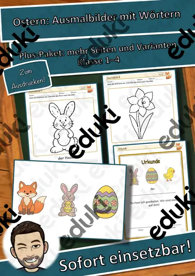
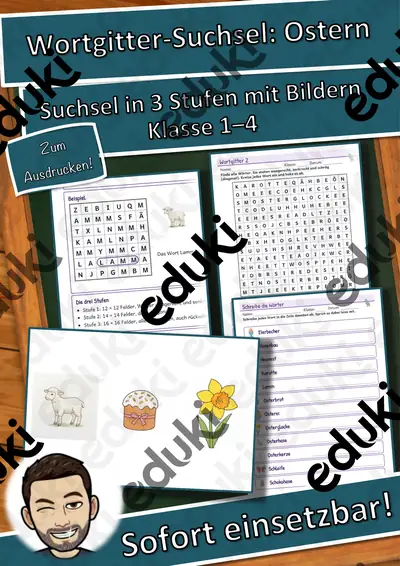

Ostern und Frühling: Arbeitsblätter für Klasse 1–4 (Religion)
Ostern verbindet christliche Tradition, Frühling und Bräuche. Im Unterricht begegnen Kinder der Ostergeschichte genauso wie Osterhase, Ostereiern und regionalen Bräuchen.
Gearbeitet wird in der Regel an Karwoche, Osterfeuer und Ostereier, ergänzt um Osterhase, Frühlingsbeginn und Osterbräuche.
Wo genau im Lehrplan das Thema steht, unterscheidet sich von Land zu Land, häufig im Fach Religion in der Grundschule. Gemeinsames Ziel: die Kinder erzählen die Ostergeschichte und beschreiben Bräuche rund ums Fest.
Eine Reihe zu Ostern und Frühling lässt sich so gliedern: erst Karwoche erarbeiten, dann Osterfeuer anwenden, später Osterhase und Frühlingsbeginn vertiefen. Zu jedem Material gehört eine Musterlösung, die Korrektur und Selbstkontrolle erleichtert. Leistungsstarke und schwächere Lesende erhalten über die Lesespurgeschichten Texte in drei Stufen.
Aus unserem Katalog gehören 21 Materialien zu diesem Thema, darunter Jahreszeiten-Werkstatt: Ostern: Ausmalbilder, Materialpaket Ostern Karwoche Ostergeschichte und Wortgitter-Suchsel: Ostern. Der Bestand umfasst 1 Lesespurgeschichte, 1 Rechenwelt, 1 Bastelvorlage und 1 Lückentext mit Hörverstehen und reicht über Klasse 1–5. Eier mit Naturfarben färben lässt sich mit Zwiebelschalen und Rotkohl in jeder Klasse umsetzen.
Das gehört zum Thema
Passende Arbeitsblätter und Materialpakete

Jahreszeiten-Werkstatt: Ostern: Ausmalbilder mit Wörtern – Plus-Paket, Klasse 1–4

Materialpaket Ostern Karwoche Ostergeschichte (groß) (auch Homeschooling)

3D-Anhänger Ostern – Oktaeder, Diamant und Kugel zum Ausmalen und Basteln, 3-fach differenziert (Klasse 3/4)

Der Ostermarkt – Rollenspiel Gewichte mit Brüchen ½ ¼ ¾ kg, 3-fach differenziert (Klasse 4)

Ostern – Bräuche rund ums Osterfest – Lesespurgeschichte mit Rätselaufgaben (Klasse 2)

Osterei Lückentext mit Wortspeicher Hörverstehen und Suchsel

Wortgitter-Suchsel: Ostern – Wortgitter – Klasse 1–4

Sprechanlässe: Ostern – Sprechanlässe – Klasse 1–4

Lesen, Malen und Kleben: Ostern – Lesen und Malen – Klasse 1–4

Wortspiele: Sag es nicht! Ostern – Klasse 2–4

Wort-Bild-Karten: Ostern – Wort-Bild-Karten – Klasse 1–4

Ich habe, wer hat? Ostern – Lese-Schleifen – Klasse 1–4

Ostern: Das große Gemeinschaftsbild – 30 Felder, ein Kunstwerk für die ganze Klasse

Rechenmosaik Osterhase: Plus und Minus bis 1000 – lösen, kleben, ausmalen in 3 Stufen (Klasse 3)

Lies und male Ostern – Leseverstehen und Ausmalen in 3 Stufen (Klasse 1–2, DaZ, Förder)

Ostern Quiz mit Lösung (Textverstehen)

Oster-Ausmalbilder, Ausmalbilder für Ostern - Klassenzimmergestaltung

Poster: Ostergeschichte Ostern, Karwoche, Ostern

Ostergeschichte Karwoche Ostern (Ausmalbuch) (auch Homeschooling)

Ostergeschichte, Ostern, Karwoche, Religion

Kunst Ostereier zum Bemalen (auch Vertretung)
Häufige Fragen
Für welche Klassenstufe passen die Arbeitsblätter zu Ostern und Frühling?
Die 21 Materialien zu diesem Thema sind für Klasse 1–5 ausgelegt, die meisten davon für Klasse 3. Einzelne Titel lassen sich mit Anpassung auch eine Stufe darunter oder darüber einsetzen.
Welche Inhalte decken die Materialien zu Ostern und Frühling ab?
Behandelt werden unter anderem Karwoche, Osterfeuer, Ostereier und Osterhase. Welche Aspekte in Ihrer Klasse Vorrang haben, richtet sich nach dem Lehrplan Ihres Bundeslandes.
Wie setze ich Ostern und Frühling im Unterricht ein?
Eier mit Naturfarben färben lässt sich mit Zwiebelschalen und Rotkohl in jeder Klasse umsetzen. Danach genügt meist ein Material als Einstieg und eines zum Üben.
Mehr Material nach Fach und Klasse
Verwandte Lehrplanthemen
- Bibel und christliche Feste (Religion, Klasse 1–6)
- Basteln, Falten und Werken (Kunst, Klasse 1–6)
- Weihnachten und Advent (Religion, Klasse 1–6)
- Weltreligionen (Religion, Klasse 4–9)
- Addition und Subtraktion (Mathematik, Klasse 1–4)